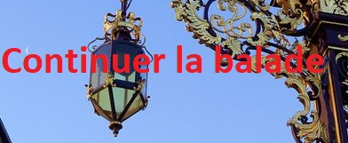

Balade des sept châteaux
Il faut environs 2 heures pour effectuer la balade
La balade vous fera découvrir les sept châteaux de Villers qui sont:
- Château de Rémicourt
- Château de Brabois
- La Tour Greff
- Château de l'Asnée
- Château de Madame de Graffigny
- Château Simon de Chattelus
- Château de Saint-Fiacre
Pour lancer la balade cliquez sur le bouton ci-dessous
